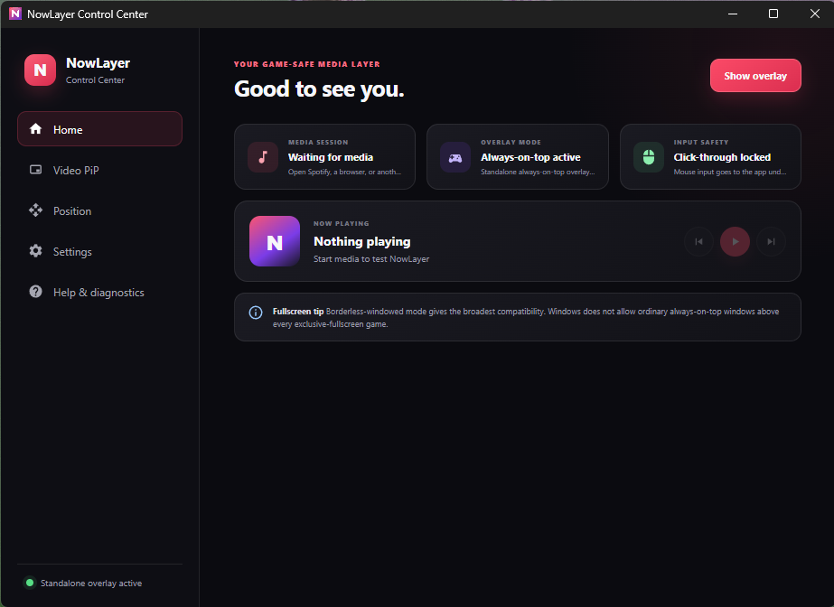
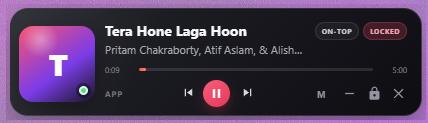

Clicks go to your game
Locked overlays are click-through and non-focusable. Unlock when you want to interact.
FOR WINDOWS · BUILT AROUND YOUR GAME
New in 1.1.0: one Home for every overlay, slim performance layouts, and bundled game FPS. A small layer above your game that lets your clicks pass through.


Click-through when lockedMusic controls
Video PiP
Performance
Clock & timers
A LITTLE SPACE. A LOT WITHIN REACH.
Keep what matters on screen. Place each widget around your game.
See the title, artist, and playback progress from Windows media sessions. Real album art appears when the player supplies it; otherwise, the space goes back to your track. Or bring a browser or video-player window into a resizable 16:9 PiP.
Unlock to control or resize. Lock to send clicks back to the game.
Game FPS and frame time, CPU/GPU usage and temperatures, RAM, and VRAM in a separate widget. Start with a 34-pixel-tall strip along the top or bottom. Try a compact row or detailed card, with Graphite, Midnight, and Minimal HUD themes.
See metric requirementsChoose an analog or digital clock, 12- or 24-hour format, and optional seconds. Add a countdown or daily alarm with your own alert sound.
Keep time with your music, or use a separate clock and timer widget.
YOUR SETUP, YOUR WAY
Home brings media, performance, Video PiP, clock, countdown, and alarms together. Check a feature to enable it; open Customize only when you want to make it yours.
Locked overlays are click-through and non-focusable. Unlock when you want to interact.
Snap to an edge or corner, or drag an overlay into place. Resize Video PiP without losing its 16:9 shape.
See what is enabled and turn features on or off without hopping between tabs. Select your video window right from Home.
Click a shortcut and press your combination. Show or hide overlays, lock interaction, and dismiss alerts.
NOW WITH PERFORMANCE MONITORING
CPU and RAM work immediately. Game FPS capture comes with the installer and follows your foreground app. Additional hardware sensors depend on your device and provider. Missing readings stay unavailable.
No renderer FPS passed off as game FPS. Collection pauses when you hide the overlay.
| Metric | Data source |
|---|---|
| CPU usage & RAM | Built in. No extra tools. |
| Game FPS & frame time | Included with NowLayer. Automatic foreground capture; Windows ETW permission required. No separate install. |
| NVIDIA GPU & VRAM | The NVIDIA driver’s nvidia-smi utility, where supported. |
| CPU temperature & AMD/Intel GPU | Libre Hardware Monitor running with its WMI provider and sensor access. |
Sensor availability depends on your hardware and permissions. FPS measures application presents; it can differ from displayed FPS with frame generation.
GET STARTED
Download the Windows x64 installer from GitHub Releases. Open NowLayer from your desktop or Start menu.
Open Home and check the features you want. Use Customize for layouts, themes, positions, sizes, and opacity.
Use borderless-windowed mode and lock interaction. Your mouse stays with the game.
Borderless-windowed mode is recommended. Normal windowed games and apps also work. Exclusive fullscreen can cover desktop overlays, so switch display mode if NowLayer disappears. Compatibility varies by game; “game-safe” describes click-through input, not an anti-cheat certification.
CPU usage and RAM need no setup. Game FPS is bundled: enable Performance from Home and switch to your game. An optional executable-name override is available in customization. For CPU temperature and AMD/Intel sensors, keep Libre Hardware Monitor running with WMI enabled. NVIDIA readings use nvidia-smi when available.
The game may not be presenting frames, a sensor may be unsupported, or a provider may not be running. Check the status in Performance. PresentMon requires ETW access through the Performance Log Users group or administrator privileges; toggle monitoring off and on after correcting setup.
If the player publishes a thumbnail through Windows media controls, NowLayer displays it. When no image is available, there is no placeholder badge or empty artwork box—just your track and controls.
Music controls work with apps that publish Windows media sessions, including supported browser players, Spotify, and VLC. Video PiP captures your selected window. DRM-protected video may appear black, and minimized windows may stop updating.
No. NowLayer runs locally without an account or subscription. It does not replace any subscription required by your music or video provider. No Overwolf runtime is required.
Unlock interaction with Ctrl + Shift + L, then drag the overlay. Video PiP can also be resized from its edges or with a size preset. Lock again before playing. Change shortcuts in Settings to match your setup.
KEEP THE USEFUL THINGS CLOSE
NowLayer for Windows 10 and 11 · x64